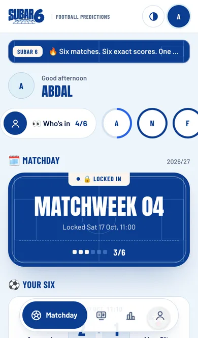
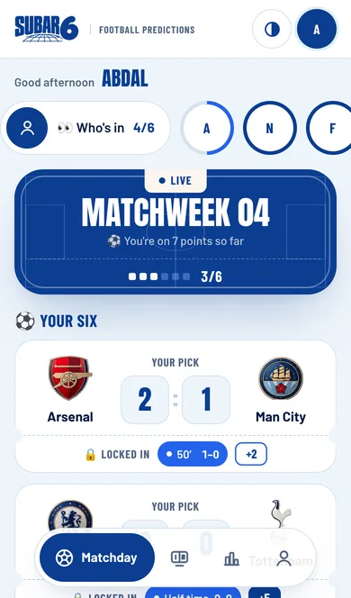
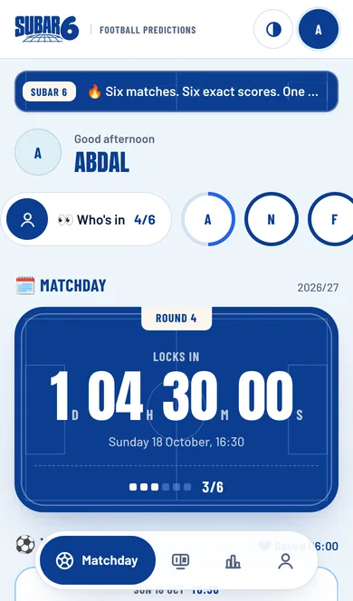
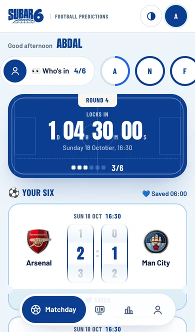
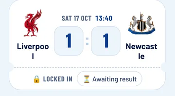
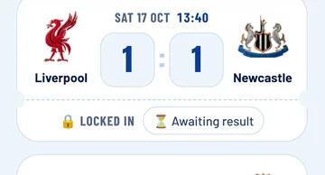

<title>Subar Sitta Review 23 Oct</title>
<link rel="preconnect" href="https://fonts.googleapis.com">
<link rel="preconnect" href="https://fonts.gstatic.com" crossorigin>
<link rel="stylesheet" href="https://fonts.googleapis.com/css2?family=Anton&family=Barlow+Condensed:wght@700&family=Barlow:wght@400;500;600;700&display=swap">
<style>
/* Layout: one phone-width column, matchday-card styling from the SUBAR 6 system */
:root{
  --bg:#EEF5FB;--card:#FFFFFF;--ink:#061A40;--ink-2:#2D4167;--ink-3:#536583;--royal:#0B3D91;--cobalt:#2563EB;--pale:#DEEFF7;--ivory:#FBF6EE;--rule:#D3E2F1;
  --ok:#0B6B4F;--ok-bg:#DDF3EA;--wait:#8A4B00;--wait-bg:#FCEFD9;--on-royal:#FBF6EE;--on-royal-2:#BCD3F2;
  --display:"Anton","Impact","Arial Narrow",sans-serif;--label:"Barlow Condensed","Arial Narrow",sans-serif;--body:"Barlow",system-ui,-apple-system,"Segoe UI",sans-serif;
}
@media (prefers-color-scheme:dark){:root:not([data-theme="light"]){
  --bg:#050E24;--card:#0C2050;--ink:#EEF5FB;--ink-2:#BCCDE8;--ink-3:#93A8CB;--royal:#0E46A8;--cobalt:#8CBBFF;--pale:#13306B;--rule:#1D3A75;
  --ok:#7BE0B8;--ok-bg:#0F3A33;--wait:#FFC978;--wait-bg:#3A2A10;color-scheme:dark}}
:root[data-theme="dark"]{
  --bg:#050E24;--card:#0C2050;--ink:#EEF5FB;--ink-2:#BCCDE8;--ink-3:#93A8CB;--royal:#0E46A8;--cobalt:#8CBBFF;--pale:#13306B;--rule:#1D3A75;
  --ok:#7BE0B8;--ok-bg:#0F3A33;--wait:#FFC978;--wait-bg:#3A2A10;color-scheme:dark}
*{box-sizing:border-box}
body{background:var(--bg);color:var(--ink);font:400 17px/1.5 var(--body);margin:0}
.page{max-width:640px;margin:0 auto;padding-inline:16px;padding-block:18px 48px;display:flex;flex-direction:column;gap:26px}
h1,h2,h3,p{margin:0}
h2{font:400 26px/1.05 var(--display);text-transform:uppercase;color:var(--ink);text-wrap:balance}
.lbl{font:700 13px/1 var(--label);text-transform:uppercase;letter-spacing:.08em;color:var(--ink-3)}
section{display:flex;flex-direction:column;gap:12px}

.hero{background:var(--royal);color:var(--on-royal);border-radius:28px;padding:24px 22px;display:flex;flex-direction:column;gap:12px;position:relative}
.hero::before{content:"";position:absolute;inset:7px;border-radius:22px;box-shadow:inset 0 0 0 1.5px rgba(251,246,238,.32);pointer-events:none}
.hero .lbl{color:var(--on-royal-2)}
.hero h1{font:400 clamp(30px,8vw,44px)/1 var(--display);text-transform:uppercase}
.health{display:inline-flex;align-self:flex-start;align-items:center;gap:8px;background:var(--ivory);color:#0B3D91;border-radius:999px;padding:8px 16px;font:700 16px/1 var(--label);text-transform:uppercase;letter-spacing:.04em}
.hero p{color:var(--on-royal-2)}

.tiles{display:grid;grid-template-columns:repeat(3,minmax(0,1fr));gap:10px}
.tile{background:var(--card);border-radius:18px;padding:14px 12px;display:flex;flex-direction:column;gap:6px;min-width:0}
.tile .big{font:400 26px/1 var(--display);color:var(--ink)}
.tile span{font-size:14px;line-height:1.3;color:var(--ink-2)}
@media (max-width:440px){.tiles{grid-template-columns:minmax(0,1fr)}.tile{flex-direction:row;align-items:center;gap:12px}.tile .big{min-width:64px}}

.list{display:flex;flex-direction:column;gap:8px;margin:0;padding:0;list-style:none}
.item{background:var(--card);border-radius:16px;padding:14px 16px;display:flex;gap:12px;align-items:flex-start}
.item b{color:var(--ink);font-weight:600}
.item p{color:var(--ink-2);font-size:15px;margin-top:2px}
.chip{flex:none;font:700 12px/1 var(--label);text-transform:uppercase;letter-spacing:.06em;padding:6px 9px;border-radius:7px;white-space:nowrap;margin-top:2px}
.ok{background:var(--ok-bg);color:var(--ok)} .wait{background:var(--wait-bg);color:var(--wait)}
.item>div{flex:1;min-width:0}

.rank{counter-reset:r}
.rank .item{position:relative;padding-left:54px}
.rank .item::before{counter-increment:r;content:counter(r);position:absolute;left:16px;top:12px;font:400 28px/1 var(--display);color:var(--cobalt)}
.why{color:var(--ink-2);font-size:15px;margin-top:4px}
.why::before{content:"Why it matters: ";font-weight:600;color:var(--ink)}

.compare{display:grid;grid-template-columns:repeat(2,minmax(0,1fr));gap:10px;margin-top:10px}
figure{margin:0;display:flex;flex-direction:column;gap:6px;min-width:0}
figure img{width:100%;height:auto;display:block;border-radius:14px;box-shadow:0 0 0 1px var(--rule)}
figcaption{font:700 13px/1.2 var(--label);text-transform:uppercase;letter-spacing:.05em;color:var(--ink-3)}

.next{background:var(--royal);color:var(--on-royal);border-radius:24px;padding:22px;display:flex;flex-direction:column;gap:14px}
.next h2{color:var(--on-royal)} .next .lbl{color:var(--on-royal-2)} .next p{color:var(--on-royal-2)}
.steps{margin:0;padding:0;list-style:none;display:flex;flex-direction:column;gap:8px;counter-reset:s}
.steps li{background:rgba(251,246,238,.1);border-radius:14px;padding:12px 14px 12px 50px;position:relative;color:var(--on-royal)}
.steps li::before{counter-increment:s;content:counter(s);position:absolute;left:16px;top:9px;font:400 24px/1 var(--display);color:var(--ivory)}
.btn{display:inline-block;background:var(--ivory);color:#0B3D91;font:700 16px/1 var(--label);text-transform:uppercase;letter-spacing:.05em;padding:14px 18px;border-radius:999px;text-decoration:none;align-self:flex-start}
.btn:focus-visible,a:focus-visible{outline:2px solid var(--ivory);outline-offset:3px}
a{color:var(--cobalt)}
.close{background:var(--card);border-radius:20px;padding:18px;display:flex;flex-direction:column;gap:10px}
.close p{color:var(--ink-2)} .close b{color:var(--ink)}
.bars{display:flex;flex-direction:column;gap:10px;margin-top:6px}
.bar{display:grid;grid-template-columns:72px minmax(0,1fr) 52px;align-items:center;gap:10px;font-size:14px;color:var(--ink-2)}
.bar i{display:block;height:14px;border-radius:7px;background:var(--rule)}
.bar.new i{background:var(--cobalt)}
.bar b{font:400 18px/1 var(--display);color:var(--ink);text-align:right}
.rounds{display:grid;grid-template-columns:repeat(4,minmax(0,1fr));gap:8px}
.rounds div{background:var(--card);border-radius:14px;padding:10px;font-size:13px;color:var(--ink-2);min-width:0}
.rounds b{display:block;font:400 18px/1.1 var(--display);color:var(--ink);text-transform:uppercase;margin-bottom:4px}
@media (max-width:440px){.rounds{grid-template-columns:repeat(2,minmax(0,1fr))}}
</style>
<main class="page">

<header class="hero">
  <span class="lbl">Subar Sitta — 48-hour review · Friday 23 October</span>
  <h1>Tested, judged and polished, four times over</h1>
  <span class="health">🟢 Website health: Good</span>
  <p>I tested every screen, fixed what I found, then tested and judged again until nothing was left to fix. All of it is ready on a private preview. Nothing on the live site has changed.</p>
</header>

<section aria-labelledby="c">
  <h2 id="c">1. What I checked</h2>
  <div class="rounds">
    <div><b>Round 1</b>Every screen on a phone, including a match in progress. Found 3 problems.</div>
    <div><b>Round 2</b>Fixed them, then judged again. Found the live screen could confuse.</div>
    <div><b>Round 3</b>Fixed that. Tried a small phone: club names were breaking.</div>
    <div><b>Round 4</b>Fixed that. Computer, dark mode, accessibility: all clear.</div>
  </div>
  <ul class="list">
    <li class="item"><span class="chip ok">Pass</span><div><b>Scores and winners</b><p>40 checks, including the new live scores: a live score never counts as a final result.</p></div></li>
    <li class="item"><span class="chip ok">Pass</span><div><b>13 player journeys, phone and computer</b><p>Sign-up, picks, 0–0, saving, retry, deadlines, live matches, back button, joint winners.</p></div></li>
    <li class="item"><span class="chip ok">Pass</span><div><b>Easy to read for everyone</b><p>No accessibility problems on any screen, in light or dark mode.</p></div></li>
  </ul>
</section>

<section aria-labelledby="f">
  <h2 id="f">2. What I found</h2>
  <ol class="list rank">
    <li class="item"><div><b>During matches, Matchday said "Awaiting result"</b><p>The Results page showed the live score, but the screen players open first showed nothing live.</p></div></li>
    <li class="item"><div><b>On phones, you had to scroll before making a pick</b><p>The first score box sat just below the first screen.</p></div></li>
    <li class="item"><div><b>Club names broke in half on smaller phones</b><p>"Liverpoo / l", "Newcast / le", "Totten / ham", "Sunderlan / d".</p></div></li>
  </ol>
</section>

<section aria-labelledby="r">
  <h2 id="r">3. What I recommend</h2>
  <ol class="list rank">
    <li class="item"><div><b>Make Matchday come alive during matches</b>
      <p class="why">During a match, your phone shows live scores and your running total, like checking a football app.</p>
      <div class="compare">
        <figure><figcaption>Today</figcaption></figure>
        <figure><figcaption>New</figcaption></figure>
      </div></div></li>
    <li class="item"><div><b>Put the first pick on the first screen</b>
      <p class="why">Players can predict the moment they open the app, which should mean more complete rounds.</p>
      <div class="compare">
        <figure><figcaption>Today</figcaption></figure>
        <figure><figcaption>New</figcaption></figure>
      </div></div></li>
    <li class="item"><div><b>Show the page sooner on phones</b>
      <p class="why">Players see the game almost a second sooner on a slow phone connection instead of a blank screen.</p>
      <div class="bars" role="img" aria-label="Time until the page first appears: 2.3 seconds today, 1.5 seconds new. Time until Matchday is ready: 4.0 seconds today, 3.3 seconds new.">
        <span class="lbl">Page first appears</span>
        <div class="bar"><span>Today</span><i style="width:100%"></i><b>2.3s</b></div>
        <div class="bar new"><span>New</span><i style="width:64%"></i><b>1.5s</b></div>
        <span class="lbl" style="margin-top:6px">Matchday ready to use</span>
        <div class="bar"><span>Today</span><i style="width:100%"></i><b>4.0s</b></div>
        <div class="bar new"><span>New</span><i style="width:84%"></i><b>3.3s</b></div>
      </div></div></li>
  </ol>
</section>

<section aria-labelledby="p">
  <h2 id="p">4. What I prepared</h2>
  <ul class="list">
    <li class="item"><span class="chip ok">Built &amp; tested</span><div><b>All three recommendations above</b><p>Ready on a private preview copy of the website.</p></div></li>
    <li class="item"><span class="chip ok">Built &amp; tested</span><div><b>Four smaller fixes</b><p>Club names stay whole on small phones. The phone's back button goes back instead of closing the site. Joint round winners are both celebrated. The rules now say exactly what the Golden Goal does: it picks the round winner when points are level.</p></div></li>
    <li class="item"><span class="chip ok">Built &amp; tested</span><div><b>Before / after on a small phone</b>
      <div class="compare"><figure><figcaption>Today</figcaption></figure>
      <figure><figcaption>New</figcaption></figure></div></div></li>
  </ul>
</section>

<section class="next" aria-labelledby="n">
  <span class="lbl">5. What you need from me</span>
  <h2 id="n">Try it on your phone</h2>
  <p>The preview is a private copy of the website with all the improvements. It uses your real game, so any picks you save there are real.</p>
  <ol class="steps">
    <li>Open the preview on your phone using the button below.</li>
    <li>Sign in and look around Matchday, Results and the Table.</li>
    <li>Come back and reply <b>"Approve"</b>, or tell me what to change.</li>
  </ol>
  <a class="btn" href="https://subar-sitta-git-claude-modest-newton-t5pn2o-il3out.vercel.app">Open the preview →</a>
</section>

<section class="close" aria-labelledby="s">
  <span class="lbl" id="s">Summary</span>
  <p><b>Already completed:</b> four rounds of testing and fixing; every improvement built, tested and ready on the preview.</p>
  <p><b>Happens automatically next:</b> your next 48-hour review arrives Sunday 25 October at 7:47 am.</p>
  <p><b>What you need to do now:</b> open the preview on your phone.</p>
</section>

</main>
